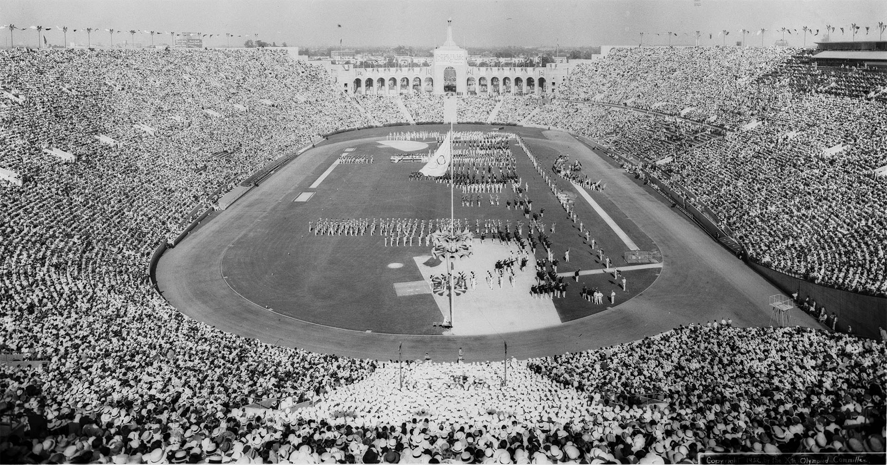

<DOCTYPE HTML>
<link rel="stylesheet" href="indexstyle.css">
<h1>
1932
</h1>
 
<h2>
USA
</h2>
  
During the Great Depression.
1/2 as many participants as in 1928, since countries could not afford to send their athletes.
Only LA was willing to bid for the olympics, so it won.

  

 

</HTML>
